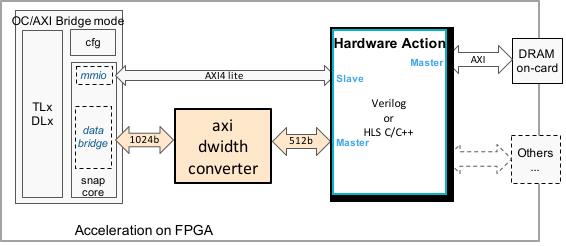

Migrate from SNAP1.0/2.0
Data width change
The AXI data port width of OC-Accel is 1024bit. But the actions developed in SNAP (CAPI1.0/2.0) use 512b.
Please select 512b in Kconfig Menu. Then a dwidth_converter will be inserted automatically.

All of the AXI4 features in SNAP are supported by OC-Accel, and it has added more. Read OC-Accel AXI4 feature list for more details.
Clock frequency
The default clock frequency in SNAP (CAPI1.0/2.0) was 250MHz. There was no asynchronous logic between capi2-bsp, snap_core and action_wrapper so the frequency had to be adjusted together.
The default clock frequency for action_wrapper in OC-Accel is 200MHz. Asynchronous clocks have been designed for oc-bip, snap_core and action_wrapper so the clock frequency can be adjusted more flexibly for each part. See Clock domains.
Library name
| SNAP (CAPI1.0/2.0) | OC-Accel (OpenCAPI3.0) |
|---|---|
| libcxl | libocxl |
| libsnap | libosnap |
Included headers
Many headers have changed from "snap" to "osnap" to avoid conflicts.
| SNAP (CAPI1.0/2.0) | OC-Accel (OpenCAPI3.0) |
|---|---|
| snap_types.h | osnap_types.h |
| snap_tools.h | osnap_tools.h |
| snap_queue.h | osnap_queue.h |
| snap_internal.h | osnap_internal.h |
| snap_hls_if.h | osnap_hls_if.h |
| snap_m_regs.h | osnap_global_regs.h |
| snap_s_regs.h | N/A |
| snap_regs.h | N/A |
| libsnap.h | libosnap.h |
There is a big change of the Register Map. OC-Accel has simplified and enlarged the Register Layout.
API changes
The APIs to operate registers have been renamed to clarify it is action region or global region. | SNAP (CAPI1.0/2.0) | OC-Accel (OpenCAPI3.0) | | --- | --- | | snap_mmio_read32() | snap_action_read32() | | snap_mmio_write32() | snap_action_write32() | | snap_mmio_read64() | snap_global_read64()| | snap_mmio_write64()| snap_global_write64() |
The API changes also reflect the Register map changes.
SNAP_CONFIG=CPU discarded
In SNAP (CAPI1.0/2.0), it has implemented a group of function pointers for CPU to emulate the FPGA action, aka "software action". It is enabled when setting SNAP_CONFIG=CPU:
/* Software version of the lowlevel functions */
static struct snap_funcs software_funcs = {
.card_alloc_dev = sw_card_alloc_dev,
.attach_action = sw_attach_action, /* attach Action */
.detach_action = sw_detach_action, /* detach Action */
.mmio_write32 = sw_mmio_write32,
.mmio_read32 = sw_mmio_read32,
.mmio_write64 = sw_mmio_write64,
.mmio_read64 = sw_mmio_read64,
.card_free = sw_card_free,
.card_ioctl = sw_card_ioctl,
};
These functions have been deleted. The original purpose of SNAP_CONFIG=CPU is to provide a way to fall back to software execution when FPGA is not available. However, this actually can be easily done by higher level of application control, for example:
if (!snap_card_alloc_dev()) //Failed to open FPGA card
call_original_software_function
So there is no need to rewrite the original software function at all.
The corresponding concept is SNAP_CONFIG=FPGA and it becomes the ONLY working mode in OC-Accel. So the variable SNAP_CONFIG has been deleted.
Open the card
OpenCAPI device name has a slight difference to SNAP1/2.
// Allocate the card that will be used
if(card_no == 0)
snprintf(device, sizeof(device)-1, "IBM,oc-snap");
else
snprintf(device, sizeof(device)-1, "/dev/ocxl/IBM,oc-snap.000%d:00:00.1.0", card_no);
card = snap_card_alloc_dev(device, SNAP_VENDOR_ID_IBM, SNAP_DEVICE_ID_SNAP);
Use interrupt
When action_irq=1, please pay attention to following:
snap_action_flag_t action_irq = SNAP_ACTION_DONE_IRQ;- Add a step to set irq handle:
if(action_irq)
snap_action_assign_irq(action, ACTION_IRQ_SRC_LO);
ACTION_TYPE and RELEASE LEVEL
Note
These changes are only for HLS Actions
In actions/<hls_xxx>/include/xxx.h, define your ACTION_TYPE and RELEASE_LEVEL as following:
// ------------ MUST READ -----------
// ACTION_TYPE and RELEASE_LEVEL are automatically handled.
// 1. Define them in header file (here), use HEX 32bits numbers
// 2. They will be extracted by hardware/setup/patch_version.sh
// 3. And put into snap_global_vars.v
// 4. Used by hardware/hls/action_wrapper.v
#define ACTION_TYPE 0x10141008
#define RELEASE_LEVEL 0x00000022
// For snap_maint, Action descriptions are decoded with the help of software/tools/snap_actions.h
// Please modify this file so snap_maint can recognize this action.
// ------------ MUST READ -----------
In snap_attach_action, just use ACTION_TYPE:
action = snap_attach_action(card, ACTION_TYPE, action_irq, 60);
And in actions/<hls_xxx>/hw/xxx.cpp:
- Remove
action_RO_config_reg *Action_Config. It was only used to handle ACTION_TYPE and RELEASE_LEVEL and they are not needed anymore. - Remove following:
#pragma HLS DATA_PACK variable=Action_Config
#pragma HLS INTERFACE s_axilite port=Action_Config bundle=ctrl_reg offset=0x010
- Replace following:
switch (Action_Register->Control.flags) {
case 0:
Action_Config->action_type = (snapu32_t) CHECKSUM_ACTION_TYPE;
Action_Config->release_level = (snapu32_t) RELEASE_LEVEL;
Action_Register->Control.Retc = (snapu32_t)0xe00f;
return;
break;
default:
Action_Register->Control.Retc = (snapu32_t)0x0;
process_action(Action_Register);
break;
}
to simply call
process_action(Action_Register);